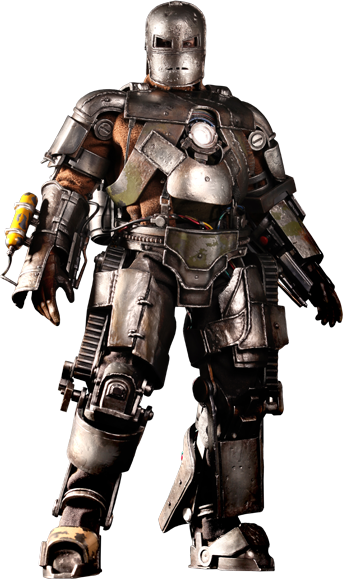
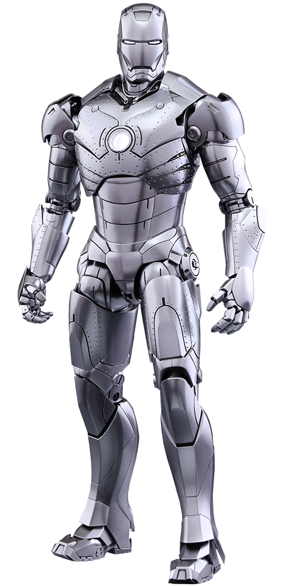

mark 3

Anthony Edward "Tony" Stark is a character portrayed by Robert Downey Jr. in the Marvel Cinematic Universe (MCU) film franchise, based on the Marvel Comics character of the same name and known commonly by his alter ego, Iron Man. In the films, Stark is an industrialist, genius inventor, hero and former playboy who is CEO of Stark Industries. At the beginning of the series, he is a chief weapons manufacturer for the U.S. military, until he has a change of heart and redirects his technical knowledge into the creation of powered exoskeleton suits of armor which he uses to defend against those that would threaten peace around the world. As of 2019, the character was one of the central figures of the MCU, having appeared in eleven films of the series;[N 1] from his introduction in Iron Man, up to Spider-Man: Far From Home. In 2015, the evolution of the character over the series was described as "the defining arc of the Marvel Cinematic Universe".[1] In 2018, it was argued that "no other character goes on as transformative a journey as Iron Man
mark 1
Tony Stark to Ho Yinsen about the Mark I. The Mark I (Mark 1), was the first Iron Man suit built and created by Tony Stark. It was built in the initial events of the live-action film, Iron Man. The suit was later used as a model for O The suit has several notable functionalities and weapons It is equipped with a Manually Deployed Rocket Launcher, a Flamethrower mounted on each arm, Jet Boots equipped in its soles, an exposed Internal System attached to its back, and the very first Miniature Arc Reactor in the center of its chest. This reactor powers the entire suit. Later, Tony created an upgraded version that would power almost every other suit to date.
mark 2
J.A.R.V.I.S.: Test complete. Preparing to power down and begin diagnostics..." Tony Stark: "Uh, yeah, tell you what. Do a weather and ATC check, start listening in on ground control." ―(Iron Man) J.A.R.V.I.S. and Tony Stark while testing the Mark II. The Mark II (Mark 2), was the second Iron Man Armor designed and created by Tony Stark and is the successor to the original Mark I armor. It was constructed as a prototype with an emphasis on exploring flight potential. As the first suit of Iron Man Armor built at Stark Industries, the Mark II armor features new technology compared to the effective but crude Mark I armor. It was soon replaced by the Mark III armor after its initial flight testing revealed its inability to reach the higher atmosphere due to the build up of ice.
mark 3
The Mark III (Mark 3) was the third Iron Man Armor designed and created by Tony Stark and is the successor to the Mark II. The armor was designed with upgraded technology and improved features to surpass its predecessor's capabilities. It is also the classic armor The Mark III (Mark 3) was the third Iron Man Armor designed and created by Tony Stark and is the successor to the Mark II. The armor was designed with upgraded technology and improved features to surpass its predecessor's capabilities. It is also the classic armor. The strongest of the armors in Iron Man, it was designed for customization. The Mark III was equipped with a variety of incredible enhancements and upgrades. It was heavily damaged at the end of the first Iron Man by the Iron Monger. It was later succeeded by the Mark IV.